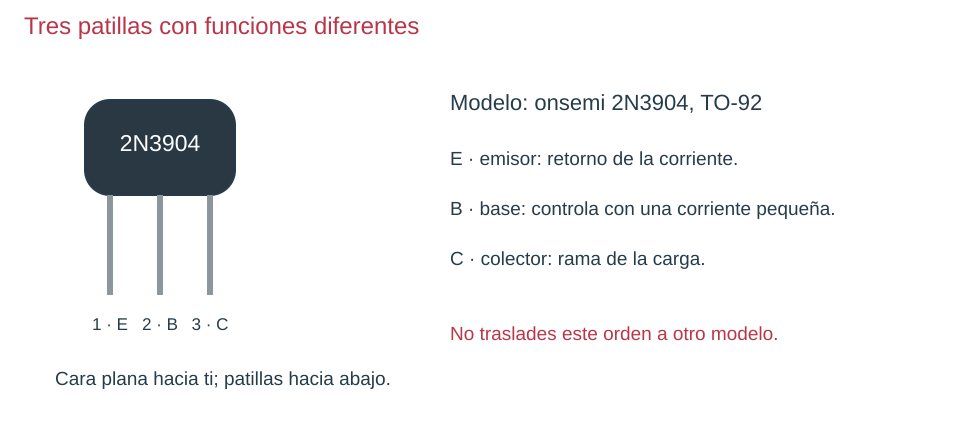
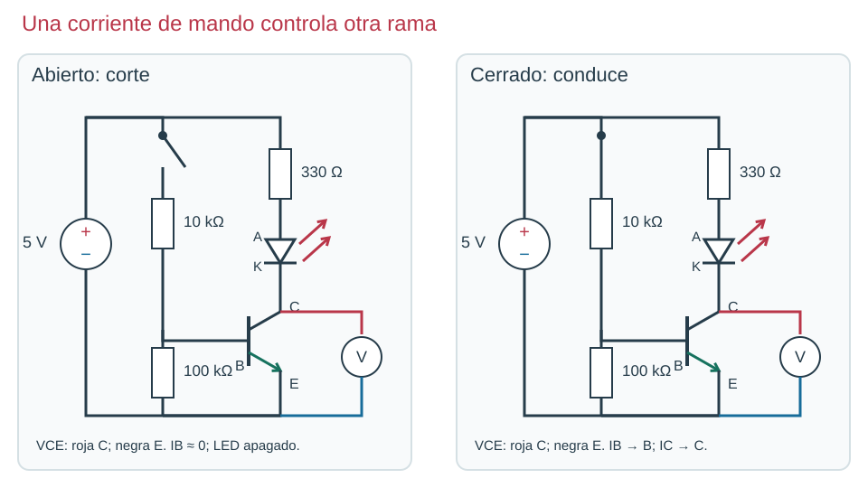

Contenido
Una señal pequeña controla la luz
Imagina que un sensor solo puede proporcionar una corriente pequeña, pero queremos controlar otra rama. El transistor permite que una corriente de mando en su base controle la corriente de la carga que entra por el colector y sale por el emisor. La energía de la luz sigue viniendo de la fuente.

El modelo mostrado es NPN. La flecha del emisor apunta hacia fuera. La posición de sus patillas se ha tomado de la ficha del fabricante onsemi. Un BC547, otro encapsulado u otro fabricante puede tener un orden diferente.

Lee el circuito por ramas
- Carga: +5 V → 330 Ω → LED (A antes de K) → C → E → negativo. La resistencia de 330 Ω limita la corriente del LED.
- Mando: +5 V → interruptor → 10 kΩ → B → E → negativo. La de 10 kΩ limita la corriente hacia la base.
- Retorno de base: 100 kΩ entre B y E ayuda a mantener la base a 0 V cuando el interruptor está abierto. No sustituye a la de 10 kΩ.
Primero dibujamos la fuente y todo el retorno. En esquemas abreviados, «+5 V» o «VCC» pueden representar ese mismo positivo y «0 V», el negativo común. Una etiqueta no es una fuente adicional: indica conexiones que pertenecen al mismo nodo.
Corte, conducción y saturación
Corte: interruptor abierto, corriente de base casi nula y LED apagado. Conducción: al cerrar aparece corriente de base y puede circular corriente por el LED. Saturación: con mando suficiente para esa carga, la tensión entre C y E es pequeña y el transistor se aproxima a un interruptor cerrado. La transición puede ser gradual; «conduce» no siempre significa «saturado».
Con VBE aproximada de 0,7 V, por la resistencia de 10 kΩ pasan (5−0,7)/10 000 = 0,43 mA. Una pequeña parte va por 100 kΩ y el resto entra en la base. La corriente del LED no atraviesa la resistencia de 10 kΩ: tiene su propia rama.
Práctica guiada: mide lo que afirma el esquema
- Sin alimentación, identifica E/B/C y conecta solo la rama de carga y el mando manual de la figura.
- Configura voltímetro V ⎓, roja al colector C y negra al emisor E.
- Alimenta con el interruptor abierto; observa LED y VCE.
- Cierra el interruptor y registra de nuevo. Una VCE pequeña junto con corriente de carga es compatible con saturación; no la declares solo porque el LED brilla.
- Mide la caída sobre 330 Ω para calcular la corriente real de carga. Desconecta antes de corregir el montaje.
Ahora tú: explica antes de comprobar
En la figura, ¿por qué conectar la negra a la base no mediría VCE? ¿Qué mide la caída sobre 10 kΩ?
Solución razonada, sin cronómetro
VCE es diferencia entre colector y emisor, no colector y base. La caída en 10 kΩ permite calcular su corriente por Ohm; esa corriente se reparte entre base y resistencia de 100 kΩ.
Aplicación autónoma · apartado 4
Dibuja en dos colores el recorrido de mando y el de carga. Explica cómo podrías tener tensión de fuente correcta y LED apagado por una conexión equivocada de E/B/C. Propón una comprobación sin cambiar componentes al azar.
Comprueba y razona
Interpreta, decide y explica
Responde antes de abrir la explicación. Sin cronómetro; usa Tab y Entrar para desplegarla.
Mira el pinout. Con la cara plana hacia ti, ¿qué patilla del onsemi 2N3904 dibujado va al retorno?
Ver razonamiento
La 1, emisor, a la izquierda en esa orientación. No transfieras esa posición a otro transistor sin su ficha.
Comprueba y razona
Interpreta, decide y explica
Responde antes de abrir la explicación. Sin cronómetro; usa Tab y Entrar para desplegarla.
En el circuito, ¿por qué 10 kΩ y 330 Ω no son intercambiables por su función?
Ver razonamiento
10 kΩ limita el mando de base; 330 Ω limita la rama LED. Sus corrientes y caídas son diferentes.